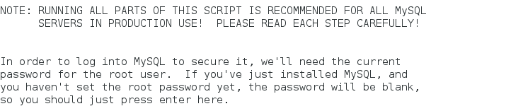
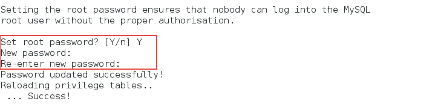
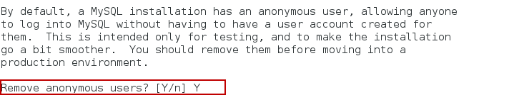
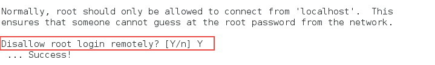
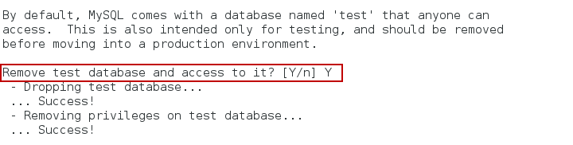
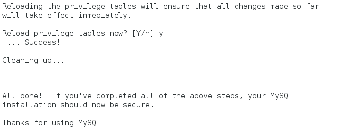
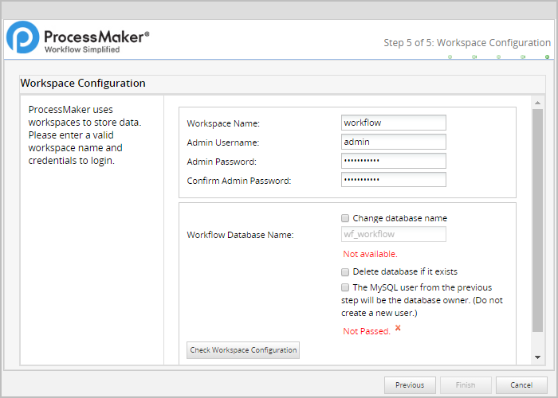
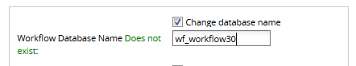

- Introduction
- Requirements
- ProcessMaker Installation
- Step 1: Download & Extract ProcessMaker
- Step 2: Configuring PHP Settings
- Step 3: MySQL Configuration
- Step 4: Apache Configuration
- VirtualHost in Apache 2.2
- VirtualHost in Apache 2.4
- Enable Apache modules
- Apache Possible Configuration Issues
- Step 6: Installation Wizard
- Pre-Installation Check
- File Permissions
- ProcessMaker Open Source License
- Database Configuration
- Workspace Configuration
- First Login
- Additional Configuration
Introduction
This guide explains how to install ProcessMaker 3.0 in a generic Linux/UNIX environment. This guide assumes that Apache, PHP and MySQL are already installed in the Linux Distribution.
Requirements
Please check the following:
- Check the Installation Requirements to see whether your server meets the necessary hardware and software requirements
- Check the browser compatibility
- To install the latest ProcessMaker version, it is recommended to have installed:
- Apache 2.4
- PHP 5.6
- MySQL 5.5
ProcessMaker Installation
Follow the steps below in order to install ProcessMaker.
Step 1: Download & Extract ProcessMaker
Go to ProcessMaker's SourceForge page and download a recent tarball of ProcessMaker, which should be named processmaker-X.X.X.X-community.tar.gz.
After the download has finished, decompress the tarball in the directory where ProcessMaker will be installed. ProcessMaker can be installed in any directory which is not publicly accessible to the internet (so do NOT install it in /var/www), but it is generally installed in /opt, since it is an optional program which doesn't come from the standard repositories.
To decompress the ProcessMaker tarball in the /opt directory, issue the following command:
This command will create a new processmaker directory, containing all the ProcessMaker files and subdirectories.
Set File Permissions
Then, issue the following commands as the "root" user so that ProcessMaker can access the necessary files when run by the Apache server:
Then, change the owner and group of the ProcessMaker files to the user which runs the Apache web server, which is:
apache:apachein Red Hat/CentOS/Fedora. Using the following command:
chown -R apache:apache /opt/processmaker/ www-data:www-datain Debian/Ubuntu/Mint. Using the following command:chown -R www-data:www-data /opt/processmaker/ wwwrun:wwwin SuSE/OpenSUSE. Using the following command:
chown -R wwwrun:www /opt/processmaker/
If unsure which users runs Apache, use the following command to find the user running the Apache server (shown in blue below):
Step 2: Configuring PHP Settings
Restrictions about PHP
Please take notice of the following PHP restrictions:
- ProcessMaker does NOT support PHP 7.
- In some hosted servers the get_headers and apache_request_headers functions may be disabled, this will cause ProcessMaker's API doesn't work properly since REstler library uses those functions. Make sure to have those functions enabled.
To avoid viewing unnecessary warning messages in the @@__ERROR__ system variable in the debugger, it is recommended to turn off deprecated and strict warnings:
Configuring PHP
The default configuration of PHP should be able to run ProcessMaker, however, check the following settings if PHP's configuration file php.ini has been modified.
Open the PHP's configuration file php.ini located at /etc/ with your favorite editor.
Search for the following lines and edit them using the following configurations:
It is also recommended to set the date.timezone to a your time zone, especially if using timer events in the Enterprise Edition. See this list of supported time zones.
Note: After installation, the same time zone should be set in the ProcessMaker interface by going to Admin > Settings > System and setting the Time Zone (or in the env.ini file).
Step 3: MySQL Configuration
| Warning: ProcessMaker is not compatible with MySQL STRICT mode, which is enabled by default as of MySQL 5.6.6. Read the Turning Off MySQL STRICT Mode section to learn how to disable it. |
The MySQL "root" user should already have all the necessary privileges to setup the ProcessMaker databases. If planning on using a MySQL user other than "root" to set up the ProcessMaker databases, then follow the steps below to grant superuser privileges to a MySQL user in order to create and update databases. Login to MySQL:
Enter the root password for MySQL.
Once in MySQL, give the user which will be running ProcessMaker superuser privileges to create create and modify MySQL databases:
Replace USER with the name of your MySQL user and PASSWORD with the password for that user. (If that user doesn't already exist, he/she will be automatically created with the above grant command. If you are running ProcessMaker on a different server than your MySQL server, then replace localhost with the domain name or IP address of the server where ProcessMaker is located.
Exit MySQL:
Setting a secure environment
Before using MySQL, use the mysql_secure_installation command to set up a secure database environment. Login as the "root" user and issue the following command:
Then follow the wizard to secure MySQL:

Here it is necessary to enter root password:
Then it is possible to change root password:

Then, it will ask about removing anonymous users:

Then it will ask about disabling root login:

Then, it is possible to change MySql database name:

Finally, reload privileges tables:

Warning: ProcessMaker does NOT support MySQL strict mode. Follow these instructions to disable the strict mode in MySQL so that ProcessMaker works correctly.
Setting the MySQL root password
If MySQL doesn't have a root password, set one for better security:
Step 4: Apache Configuration
Login as the "root" user and copy the sample ProcessMaker configuration file (which is named pmos.conf.example to Apache's directory:
The apache's directory depends on your Linux distribution.
/etc/httpdin Fedora Core, CentOS, RHEL./etc/apache2in Debian, Ubuntu, SUSE.
Fedora Core, CentOS, RHEL:
Debian, Ubuntu:
SUSE:
Then edit the pmos.conf file to fit your environment:
Fedora Core, CentOS, RHEL:
Debian, Ubuntu:
SUSE:
Depending on the Apache version where ProcessMaker will be installed, configure a:
VirtualHost in Apache 2.2
If using Apache 2.2, then use the following VirtualHost configuration. In the pmos.conf file, replace your_ip_address and your_processmaker_domain with the IP address and domain name used by your ProcessMaker server:
Replace your_ip_address with the IP number or domain name of the server running ProcessMaker. If only planning on running and accessing ProcessMaker on your local machine, then use the IP address "127.0.0.1". If using ProcessMaker on a machine whose IP address might change (such as a machine whose IP address is assigned with DHCP), then use "*", which represents any IP address. If not using the standard port 80, then it is necessary to also specify the port number.
If your DNS or /etc/hosts has a defined domain for ProcessMaker, then use that domain for your_processmaker_domain. Otherwise, use the same IP address for your_processmaker_domain as was used for your_ip_address. For more information, see the Apache Virtual Hosts Documentation.
Note: It is also possible to define the virtual host for ProcessMaker directly in the Apache configuration by inserting the above VirtualHost definition in Apache's httpd.conf file.
Example 1:
ProcessMaker is installed in the /opt/processmaker directory and is running on a server at the address 192.168.1.100:
Example 2:
ProcessMaker is installed in the /user/fred directory on your local machine at port 8080 with an dynamic IP assigned by DHCP:
Example 3:
ProcessMaker is installed in the /opt/pm3.0.1.7 directory at the IP address 123.45.67.89 and the domains www.example.com and any variant of X.example.com:
Note that www.example.com and *.example.com need to be defined in the server's DNS or /etc/hosts file for this example to work correctly.
VirtualHost in Apache 2.4
If using Apache 2.4, then use the following VirtualHost configuration. In the pmos.conf file, replace your_ip_address and your_processmaker_domain with the IP address or domain name used by your ProcessMaker server:
Replace your_ip_address with the IP number or domain name of the server running ProcessMaker. If only planning on running and accessing ProcessMaker on your local machine, then use the IP address "127.0.0.1". If using ProcessMaker on a machine whose IP address might change (such as a machine whose IP address is assigned with DHCP), then use *, which represents any IP address. If not using the standard port 80, then it is necessary to also specify the port number.
If your DNS or /etc/hosts has a defined domain for ProcessMaker, then use that domain for your_processmaker_domain. Otherwise, use the same IP address for your_processmaker_domain as was used for your_ip_address. For more information, see the Apache Virtual Hosts Documentation.
Note: It is also possible to define the virtual host for ProcessMaker directly in the Apache configuration by inserting the above VirtualHost definition in Apache's httpd.conf file.
Example 1:
ProcessMaker is installed in the /opt/processmaker directory and is running on a server at the address 192.168.1.100:
Example 2:
ProcessMaker is installed in the /user/fred directory on your local machine at port 8080 with an dynamic IP assigned by DHCP:
Example 3:
ProcessMaker is installed in the /opt/pm3.0.1.7 directory at the IP address 123.45.67.89 and the domains www.example.com and any variant of X.example.com:
Note that www.example.com and *.example.com need to be defined in the server's DNS or /etc/hosts file for this example to work correctly.
Enable Apache modules
ProcessMaker needs to use the following modules in the Apache 2 web server:
- expires
- rewrite
- deflate
- vhost_alias
Check to see whether these modules are enabled, by opening Apache's httpd.conf configuration file (often found at /etc/httpd/conf/httpd.conf). The following 4 lines should be found in the list of Apache modules to load:
Note: If using Apache 2.4, either include the filter module:
Or remove the following line from pmos.conf:
After editing the pmos.conf and httpd.conf files, it is necessary to restart the Apache web server to use the new configuration. On many Linux/UNIX distributions, this can be down with one of the following commands:
Apache Possible Configuration Issues
No ServerName Warning
If a similar warning message appears when restarting Apache:
Then, the ServerName needs to be set for Apache. Edit Apache's httpd.conf configuration file and add the line:
For instance, if running ProcessMaker from the local machine, then:
Non-standard Port
If running ProcessMaker off a port other than the default port 80, then add the following line to the httpd.conf file:
For instance, if running ProcessMaker from the local machine at port 8080:
Or simply:
Note: If Apache is using the default port 80, then configure other programs to not use port 80. Check whether a program is currently listening on port 80 with the command:
No VirtualHosts Warning
If you see the following message when reloading or restarting Apache:
Then, comment out or delete the following line in the httpd.conf file:
Step 6: Installation Wizard
Once all ProcessMaker configurations were set up, open a web browser and enter the IP address (and port number if not using the default port 80) where ProcessMaker is installed. For instance, if ProcessMaker is installed at the address 192.168.10.100, then go to: http://192.168.10.100 or if it is installed locally at port 8080, go to: http://127.0.0.1:8080
Then, in the web browser use the Installation Wizard to complete the installation of ProcessMaker. The wizard should work on any type of computer, which is capable of running Apache, PHP and MySQL.
Pre-Installation Check
The first step in the installation wizard checks whether the server meets the requirements to install ProcessMaker:

This step checks the versions of PHP, MySQL and cURL and ensures that the necessary PHP modules are enabled and PHP memory_limit is at least 80MB. Requirement which are not met will be marked as No. Fix any of the missing requirements before continuing with the installation.
File Permissions
The second step of the installation wizard lists the paths where the directories where ProcessMaker stores its files and checks whether those directories have the correct file permissions:

If there is a problem accessing some files or directories, check the file permissions of the directories so that the Apache user running processmaker can access them.
It is possible to change the location of the shared directory, where files containing process and case data are stored. This directory by default is placed inside the ProcessMaker installation directory under shared, but it can be placed in another location or in an Network Address Translation (NAT) server. If not using the default location for the shared directory, make sure that it has the proper file permissions so that it can be accessed by ProcessMaker, but is restricted from normal users on the server who shouldn't have access to sensitive files. It is recommended to regularly backup the shared directory and MySQL files to prevent data loss.
ProcessMaker Open Source License
The third step in the Installation Wizard displays the ProcessMaker license.

Mark the option I agree and click on Next to continue the installation.
Database Configuration
The fourth step of the installation wizard configures how to connect to the MySQL database. Enter the name and password of an MySQL user, such as "root", who has permissions to set up new databases in MySQL. Then click on Test Connection to see whether that user can login to MySQL and setup the ProcessMaker databases.

If ProcessMaker can't connect to MySQL or can not login with the user's credentials or if the database exists, an error message will appear.
Edit the information about how to connect to the database and click on Test Connection again.
Workspace Configuration
The last step of the Installation Wizard configures the name and password of the Administrator user, which by default is named "admin".
Important! The “admin” user will be able to access to all the features and functionality in your ProcessMaker installation, such as: system configuration, processes creation and editing, user and group management, case management, and report and dashboard oversight among others. Thus, it is strongly recommended you take care to configure a difficult-to-guess password for this account. Take a look at this list of password dos and don’ts. You may also consider using a strong password generator like this one.
The ProcessMaker workspace and its database can also be configured.

The name of the workspace can be changed from the default, which is "workflow". It may be useful to set up separate workspaces for each department or division in an organization or for separate sets of processes.
By default the Installation wizard will create a new MySQL user and that user will be granted access to a new database named "wf_workflow" to store ProcessMaker data. To not create a new MySQL user, but rather use the existing MySQL user entered in Step 3, mark the option Use the current user as the database owner. To change the name of the database,
Then click on the Check workspace Configuration button to verify that the configuration is correct. The message "The configuration is correct." will be displayed and the Finish button will be enabled.
If there is some error with the configuration, the message "Not passed." will be displayed in the dialog.

In addition to that, for example, if a database of the same name already exists, an error message will be displayed at the bottom right corner.

In this case, mark the option Change database names and enter a different name for the database that will be created by ProcessMaker, or mark the option Delete Database if it exists:

When the configuration is correct, click on the Finish button to create the workspace database and configure the ProcessMaker files.

If there are no problems, the message "ProcessMaker was successfully installed" will be displayed.

If there was a problem creating the database an error message will be displayed. In this case, check the configuration of MySQL and its my.cnf file.
If there was a problem writing the ProcessMaker files, change the file permissions to the directories so Apache has access.
First Login
Once ProcessMaker has been successfully installed, the web browser will be redirected to the login page. The Get Started screen will appear:

To avoid seeing the Get Started screen on every subsequent login, mark the option Don't show me again and the screen will automatically be closed.
Then, enter the name and password of the Administrator user which by default is "admin", but a different username could have been configured in Step 4 of the Installation Wizard. Enter the name of the workspace which was configured in Step 4, which by default is named "workflow", Then click on Login to enter processmaker.

The login page can be configured. For more information see Login Settings.
Note: If a previous version of ProcessMaker was accessed by the web browser, it is recommended to clear the browse cache after installing ProcessMaker to clear any stored pages from previous versions of ProcessMaker.
Additional Configuration
Additional aspects of ProcessMaker may need to be configured. See Additional Server Configuration and the Administration section of the wiki. Most installations of ProcessMaker need to configure the following:
Setting the Time Zone
The default time zone for the ProcessMaker server can be set by logging into ProcessMaker with the "admin" user and going to Admin > Settings > System and setting the Time Zone. Another way to set the time zone is edit the env.ini configuration file.
Configuring Email
If planning on sending out email notifications or enabling users to recover forgotten passwords, then see Email - Settings to configure ProcessMaker to use an email server.
Execution of cron.php
If planning on using email notifications or timer events, then the server running ProcessMaker has to be configured to periodically execute the cron.php file. See Executing Cron Scripts.